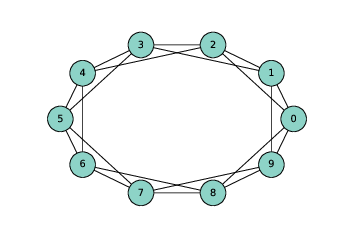
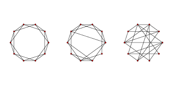
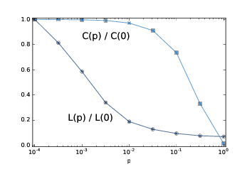

三、小世界图
原文：Chapter 3 Small world graphs
译者：飞龙
自豪地采用谷歌翻译
现实世界中的许多网络，包括社交网络在内，具有“小世界属性”，即节点之间的平均距离，以最短路径上的边数来衡量，远远小于预期。
在本章中，我介绍了斯坦利·米拉格（Stanley Milgram）的著名的“小世界实验”，这是小世界属性在真正的社交网络中的第一次科学演示。之后我们将考虑 Watts-Strogatz 图，它是一个小世界图的模型。我将复制 Watts 和 Strogatz 所做的实验，并解释它打算展示的东西。
这个过程中，我们将看到两种新的图算法：广度优先搜索（BFS）和 Dijkstra 算法，用于计算图中节点之间的最短路径。
本章的代码在本书仓库的chap03.ipynb中。使用代码的更多信息请参见第（？）章。
3.1 Stanley Milgram
斯坦利·米拉格（Stanley Milgram）是美国社会心理学家，他进行了两项最著名的社会科学实验，即 Milgram 实验，研究人们对权威的服从（http://en.wikipedia.org/wiki/Milgram_experiment）和小世界实验，研究了社交网络的结构（http://en.wikipedia.org/wiki/Small_world_phenomenon）。
在小世界实验中，Milgram 向堪萨斯州威奇托（Wichita, Kansas）的几个随机选择的人发送了包裹，带有一个指示，要求他们向马萨诸塞州沙龙（Sharon, Massachusetts）的目标人员发送一封附带的信（在我长大的地方，波士顿附近），目标人员通过名字和职业确定。受访者被告知，只有当他亲自认识目标人员时，才可以将该信直接邮寄给目标；否则他们按照指示，将信和同一个指示发送给他们认为的，更有可能认识目标人员的亲戚或朋友。
许多信件从来没有发出过，但是对于发出的信件，平均路径长度（信件转发次数）的大约为 6。这个结果用于确认以前的观察（和猜测），社交网络中任何两个人之间的通常距离是“六度分隔”。
这个结论令人惊讶，因为大多数人都希望社交网络本地化 - 人们往往会靠近他们的朋友 - 而且在一个具有本地连接的图中，路径长度往往会与地理距离成比例增加。例如，我的大多数朋友都住在附近，所以我猜想社交网络中节点之间的平均距离是大约 50 英里。威奇托距离波士顿约有 1600 英里，所以如果 Milgram 的信件穿过了社交网络的典型环节，那么他们应该有 32 跳，而不是 6 跳。
3.2 Watts 和 Strogatz
1998年，Duncan Watts 和 Steven Strogatz 在 Nature 杂志上发表了一篇“小世界网络的集体动态”（Collective dynamics of ’small-world’ networks）论文，提出了小世界现象的解释。 你可以从 http://www.nature.com/nature/journal/v393/n6684/abs/393440a0.html 下载。
Watts 和 Strogatz 从两种很好理解的图开始：随机图和正则图。在随机图中，节点随机连接。在正则图中，每个节点具有相同数量的邻居。他们考虑这些图的两个属性，群聚性和路径长度：
群聚是图表的“集团性”（cliquishness）的度量。在图中，集团是所有节点的子集，它们彼此连接；在一个社交网络中，集团是一群人，彼此都是朋友。Watts 和 Strogatz 定义了一个群聚系数，用于量化两个节点彼此连接，并同时连接到同一个节点的可能性。
路径长度是两个节点之间的平均距离的度量，对应于社交网络中的分离度。
Watts 和 Strogatz 表明，正则图具有高群聚性和长路径长度，而大小相同的随机图通常具有群聚性和短路径长度。所以这些都不是一个很好的社交网络模型，它是高群聚性与短路径长度的组合。
他们的目标是创造一个社交网络的生成模型。生成模型通过为构建或导致现象的过程建模，试图解释现象。Watts 和 Strogatz 提出了用于构建小世界图的过程：
从一个正则图开始，节点为
n，每个节点连接k个邻居。选择边的子集，并将它们替换为随机的边来“重新布线”。
边的重新布线的概率是参数p，它控制图的随机性。当p = 0时，该图是正则的；p = 1是随机的。
Watts 和 Strogatz 发现，较小的p值产生高群聚性的图，如正则图，短路径长度的图，如随机图。
在本章中，我将按以下步骤复制 Watts 和 Strogatz 实验：
- 我们将从构建一个环格（ring lattice）开始，这是一种正则图。
- 然后我们和 Watts 和 Strogatz 一样重新布线。
- 我们将编写一个函数来测量群聚度，并使用 NetworkX 函数来计算路径长度。
- 然后，我们为范围内的
p值计算群聚度和路径长度。 - 最后，我将介绍一种用于计算最短路径的高效算法，Dijkstra 算法。
3.3 环格

图 3.1
n=10，k=4的环格
正则图是每个节点具有相同数量的邻居的图；邻居的数量也称为节点的度。
环格是一种正则图，Watts 和 Strogatz 将其用作模型的基础。 在具有n个节点的环格中，节点可以排列成圆形，每个节点连接k个最近邻居。
例如，n = 3和k = 2的环形网格将拥有以下边：(0, 1), (1, 2), (2, 0)。 请注意，边从编号最高的节点“绕回”0。
更一般地，我们可以像这样枚举边：
def adjacent_edges(nodes, halfk):
n = len(nodes)
for i, u in enumerate(nodes):
for j in range(i+1, i+halfk+1):
v = nodes[j % n]
yield u, v
adjacent_edges接受节点列表和参数halfk，它是k的一半。它是一个生成器函数，一次产生一个边。它使用模运算符%，从编号最高的节点绕回最低的节点。
我们可以这样测试：
>>> nodes = range(3)
>>> for edge in adjacent_edges(nodes, 1):
... print(edge)
(0, 1)
(1, 2)
(2, 0)
现在我们可以使用adjacent_edges来生成环格。
def make_ring_lattice(n, k):
G = nx.Graph()
nodes = range(n)
G.add_nodes_from(nodes)
G.add_edges_from(adjacent_edges(nodes, k//2))
return G
注意，make_ring_lattice使用地板除计算halfk，所以如果k是奇数，它将向下取整并产生具有度k-1的环格。这可能不是我们想要的，但现在还不错。
我们可以像这样测试函数：
lattice = make_ring_lattice(10, 4)
图（？）展示了结果。
3.4 WS 图

图 3.2 WS 图，
n=20，k=4，p=0（左边），p=0.2（中间），p=1（右边）。
为了制作 Watts-Strogatz（WS）图，我们从一个环格开始，并为一些边“重新布线”。 在他们的论文中，Watts 和 Strogatz 以特定顺序考虑边，并用概率p重新布置每个边。 如果边被重新布置，则它们使第一个节点保持不变，并随机选择第二个节点。它们不允许自环或多边；也就是说，节点不能拥有到它自身的边，并且两个节点之间不能拥有多个边。
这是我的这个过程的实现。
def rewire(G, p):
nodes = set(G.nodes())
for edge in G.edges():
if flip(p):
u, v = edge
choices = nodes - {u} - set(G[u])
new_v = choice(tuple(choices))
G.remove_edge(u, v)
G.add_edge(u, new_v)
参数p是边的重新布线的概率。for循环枚举了边，并使用flip，它以概率p返回True，来选择哪些被重新布置。
如果我们重新布置节点u到节点v的边，我们必须选择一个节点来替换v，称为new_v。为了计算可能的选择，我们从节点集开始，它是一个集合，并且移除u和它的邻居，这避免了自环和多边。
然后我们从选项中选择new_v，将u到v的现有删除，并从添加一个u到new_v的新边。
另外，表达式G[u]返回一个字典，他的键是包含u的邻居。在这种情况下，它比使用G.neighbors更快一点。
这个函数不按照 Watts 和 Strogatz 指定的顺序考虑边缘，但它似乎不会影响结果。
图（？）展示了n = 20，k = 4和范围内p值的 WS 图。当p = 0时，该图是环格。 当p = 1时，它是完全随机的。我们将看到，有趣的事情发生在两者之间。
3.5 群聚性
下一步是计算群聚系数，它量化了节点形成集团的趋势。 集团是一组完全连接的节点；也就是说，在集团中的所有节点对之间都存在边。
假设一个特定的节点u具有k个邻居。如果所有的邻居都相互连接，则会有k(k-1)/2个边。 实际存在的这些边的比例是u的局部群聚系数，表示为Cu。它被称为“系数”，因为它总是在 0 和 1 之间。
如果我们计算所有节点上的Cu平均值，我们得到“网络平均群聚系数”，表示为C。
这是一个计算它的函数。
def node_clustering(G, u):
neighbors = G[u]
k = len(neighbors)
if k < 2:
return 0
total = k * (k-1) / 2
exist = 0
for v, w in all_pairs(neighbors):
if G.has_edge(v, w):
exist +=1
return exist / total
同样，我使用G [u]，它返回一个字典，键是节点的邻居。如果节点的邻居少于两个，则群聚系数未定义，但为简便起见，node_clustering返回 0。
否则，我们计算邻居之间的可能的边数量，total，然后计算实际存在的边数量。结果是存在的所有边的比例。
我们可以这样测试函数：
>>> lattice = make_ring_lattice(10, 4)
>>> node_clustering(lattice, 1)
0.5
在k=4的环格中，每个节点的群聚系数是0.5（如果你不相信，可以看看图（？））。
现在我们可以像这样计算网络平均群聚系数：
def clustering_coefficient(G):
cc = np.mean([node_clustering(G, node) for node in G])
return cc
np.mean 是个 NumPy 函数，计算列表或数组中元素的均值。
然后我们可以像这样测试：
>>> clustering_coefficient(lattice)
0.5
这个图中，所有节点的局部群聚系数是 0.5，所以节点的平均值是 0.5。当然，我们期望这个值和 WS 图不同。
3.6 最短路径长度
下一步是计算特征路径长度L，它是每对节点之间最短路径的平均长度。 为了计算它，我将从 NetworkX 提供的函数开始，shortest_path_length。 我会用它来复制 Watts 和 Strogatz 实验，然后我将解释它的工作原理。
这是一个函数，它接受图并返回最短路径长度列表，每对节点一个。
def path_lengths(G):
length_map = nx.shortest_path_length(G)
lengths = [length_map[u][v] for u, v in all_pairs(G)]
return lengths
nx.shortest_path_length的返回值是字典的字典。外层字典每个节点u到内层字典的映射，内层字典是每个节点v到u->v的最短路径长度的映射。
使用来自path_lengths的长度列表，我们可以像这样计算L：
def characteristic_path_length(G):
return np.mean(path_lengths(G))
并且我们可以使用小型的环格来测试它。
>>> lattice = make_ring_lattice(3, 2)
>>> characteristic_path_length(lattice)
1.0
这个例子中，所有三个节点都互相连接，所以平均长度为 1。
3.7 WS 实验

图 3.3：WS 图的群聚系数
C和特征路径长度L，其中n=1000, k=10，p是一个范围。
现在我们准备复制 WS 实验，它表明对于一系列p值，WS 图具有像正则图像那样的高群聚性，像随机图一样的短路径长度。
我将从run_one_graph开始，它接受n，k和p；它生成具有给定参数的 WS图，并计算平均路径长度mpl和群聚系数cc：
def run_one_graph(n, k, p):
ws = make_ws_graph(n, k, p)
mpl = characteristic_path_length(ws)
cc = clustering_coefficient(ws)
print(mpl, cc)
return mpl, cc
Watts 和 Strogatz 用n = 1000和k = 10进行实验。使用这些参数，run_one_graph在我的电脑上需要大约一秒钟；大部分时间用于计算平均路径长度。
现在我们需要为范围内的p计算这些值。我将再次使用 NumPy 函数logspace来计算ps：
ps = np.logspace(-4, 0, 9)
对于每个p的值，我生成了 3 个随机图，并且我们将结果平均。这里是运行实验的函数：
def run_experiment(ps, n=1000, k=10, iters=3):
res = {}
for p in ps:
print(p)
res[p] = []
for _ in range(iters):
res[p].append(run_one_graph(n, k, p))
return res
结果是个字典，将每个p值映射为(mpl, cc)偶对的列表。
最后一步就是聚合结果：
L = []
C = []
for p, t in sorted(res.items()):
mpls, ccs = zip(*t)
mpl = np.mean(mpls)
cc = np.mean(ccs)
L.append(mpl)
C.append(cc)
每次循环时，我们取得一个p值和一个(mpl, cc)偶对的列表。 我们使用zip来提取两个列表，mpls和ccs，然后计算它们的均值并将它们添加到L和C，这是路径长度和群聚系数的列表。
为了在相同的轴上绘制L和C，我们通过除以第一个元素，将它们标准化：
L = np.array(L) / L[0]
C = np.array(C) / C[0]
图（？）展示了结果。 随着p的增加，平均路径长度迅速下降，因为即使少量随机重新布线的边，也提供了图区域之间的捷径，它们在格中相距很远。另一方面，删除局部链接降低了群聚系数，但是要慢得多。
因此，存在较宽范围的p，其中 WS 图具有小世界图的性质，高群聚度和短路径长度。
这就是为什么 Watts 和 Strogatz 提出了 WS 图，作为展示小世界现象的，现实世界网络的模型。
3.8 能有什么解释？
如果你问我，为什么行星轨道是椭圆形的，我最开始会为一个行星和一个恒星建模；我将在 http://en.wikipedia.org/wiki/Newton's_law_of_universal_gravitation 上查找万有引力定律，并用它为行星的运动写出一个微分方程。之后我会扩展轨道方程式，或者更有可能在 http://en.wikipedia.org/wiki/Orbit_equation 上查找。通过一个小的代数运算，我可以得出产生椭圆轨道的条件。之后我会证明我们看做行星的物体满足这些条件。
人们，或至少是科学家，一般对这种解释感到满意。它有吸引力的原因之一是，模型中的假设和近似值似乎是合理的。行星和恒星不是真正的质点，但它们之间的距离是如此之大，以至于它们的实际尺寸可以忽略不计。同一太阳系中的行星可以影响彼此的轨道，但效果通常较小。而且我们忽视相对论的影响，再次假定它们很小。
这也因为它是基于方程式的。我们可以用闭式表达轨道方程，这意味着我们可以有效地计算轨道。这也意味着我们可以得出轨道速度，轨道周期和其他数量的一般表达式。
最后，我认为这是因为它具有数学证明的形式。它从一组公理开始，通过逻辑和分析得出结果。但重要的是要记住，证明属于模型，而不是现实世界。也就是说，我们可以证明，行星的理想模型产生一个椭圆轨道，但是我们不能证明这个模型与实际的行星有关（实际上它不是）。
- 这些模型可以做什么工作：它们是预测性的还是说明性的，还是都有？
- 这些模型的解释，是否比基于更传统模型的解释更不满意？为什么？
- 我们应该如何刻画这些和更传统的模型之间的差异？他们在种类还是程度上不同？
在这本书中，我将提供我对这些问题的回答，但它们是暂时性的，有时是投机性的。我鼓励你怀疑地思考他们，并得出你自己的结论。
3.9 广度优先搜索
当我们计算最短路径时，我们使用了 NetworkX 提供的一个函数，但是我没有解释它是如何工作的。为此，我将从广度优先搜索开始，这是用于计算最短路径的 Dijkstra 算法的基础。
在第（？）节，我提出了reachable_nodes，它寻找从给定的起始节点可以到达的所有节点：
def reachable_nodes(G, start):
seen = set()
stack = [start]
while stack:
node = stack.pop()
if node not in seen:
seen.add(node)
stack.extend(G.neighbors(node))
return seen
我当时没有这么说，但它执行深度优先搜索（DFS）。现在我们将修改它来执行广度优先搜索（BFS）。
为了了解区别，想象一下你正在探索一座城堡。你最开始在一个房间里，带有三个门，标记为 A，B 和 C 。你打开门 C 并发现另一个房间，它的门被标记为 D ，E 和 F。
下面你打开哪个门呢？如果你打算冒险，你可能想更深入城堡，选择 D，E 或 F。这是一个深度优先搜索。
但是，如果你想更系统化，你可以在 D，E 和 F 之前回去探索 A 和 B，这将是一个广度优先搜索。
在reachable_nodes中，我们使用list.pop选择下一个节点来“探索”。默认情况下，pop返回列表的最后一个元素，这是我们添加的最后一个元素。在这个例子中，这是门 F。
如果我们要执行 BFS，最简单的解决方案是将第一个元素从栈中弹出：
node = stack.pop(0)
这有效，但速度很慢。在 Python 中，弹出列表的最后一个元素需要常数时间，但是弹出第一个元素线性于列表的长度。在最坏的情况下，就是堆栈的长度O(n)，这使得 BFS 的O(nm)的实现比O(n + m)差得多。
我们可以用双向队列（也称为deque）来解决这个问题。deque的一个重要特征就是，你可以在开头和末尾添加和删除元素。要了解如何实现，请参阅 https://en.wikipedia.org/wiki/Double-ended_queue。
Python 在collections模块中提供了deque，所以我们可以像这样导入它：
from collections import deque
我们可以使用它来编写高效的 BFS：
def reachable_nodes_bfs(G, start):
seen = set()
queue = deque([start])
while queue:
node = queue.popleft()
if node not in seen:
seen.add(node)
queue.extend(G.neighbors(node))
return seen
差异在于：
- 我用名为
queue的deque替换了名为stack的列表。 - 我用
popleft替换pop，它删除并返回队列的最左边的元素，这是第一个添加的元素。
这个版本恢复为O(n + m)。现在我们做好了寻找最短路径的准备。
3.10 （简化的）Dijkstra 算法
Edsger W. Dijkstra 是荷兰计算机科学家，发明了一种有效的最短路径算法（参见 http://en.wikipedia.org/wiki/Dijkstra's_algorithm）。他还发明了信号量，它是一种数据结构，用于协调彼此通信的程序（参见 http://en.wikipedia.org/wiki/Semaphore_(programming）和 Downey，《The Little Book of Semaphores》）。
作为一系列计算机科学论文的作者，Dijkstra 是著名（臭名昭著）的。 有些比如“反对 GOTO 语句的案例”（A Case against the GO TO Statement），对编程实践产生了深远的影响。其他比如“真正的计算机科学教学的残酷”（On the Cruelty of Really Teaching Computing Science），很有娱乐性，但效果却不好。
Dijkstra 算法解决了“单源最短路径问题”，这意味着它寻找从给定的“源”节点到图中每个其他节点（或至少每个连接节点）的最小距离。
我们最开始考虑算法的简化版本，所有边的长度相同。更一般的版本适用于任何非负的边的长度。
简化版本类似于第一节中的广度优先搜索 除了我们用称为dist的字典替换集合seen，该字典将每个节点映射为与源的距离：
def shortest_path_dijkstra(G, start):
dist = {start: 0}
queue = deque([start])
while queue:
node = queue.popleft()
new_dist = dist[node] + 1
neighbors = set(G[node]) - set(dist)
for n in neighbors:
dist[n] = new_dist
queue.extend(neighbors)
return dist
这是它的工作原理：
- 最初，队列包含单个元素
start，dist将start映射为距离 0（这是start到自身的距离）。 - 每次循环中，我们使用
popleft获取节点，按照添加到队列的顺序。 - 接下来，我们发现节点的所有邻居都没有在
dist中。 - 由于从起点到节点的距离是
dist [node]，到任何未访问的邻居的距离是dist [node] +1。 - 对于每个邻居，我们向
dist添加一个条目，然后将邻居添加到队列中。
只有在我们使用 BFS 而不是 DFS 时，这个算法才有效。为什么？
第一次循环中，node是start，new_dist为1。所以start的邻居距离为 1，并且进入了队列。
当我们处理start的邻居时，他们的所有邻居距离为2。我们知道，他们中没有一个距离为1，因为如果有的话，我们会在第一次迭代中发现它们。
类似地，当我们处理距离为 2 的节点时，我们将他们的邻居的距离设为3。我们知道它们中没有一个的距离为1或2，因为如果有的话，我们将在之前的迭代中发现它们。
等等。如果你熟悉归纳证明，你可以看到这是怎么回事。
但是，在我们开始处理距离为2的节点之前，只有我们处理了距离为1的所有节点，这个论证才有效，依此类推。这正是 BFS 所做的。
在本章末尾的练习中，你将使用 DFS 编写 Dijkstra 算法的一个版本，以便你有机会看到出现什么问题。
3.11 练习
练习 1：
在一个环格中，每个节点的邻居数量相同。邻居的数量称为节点的度，所有节点的度相同的图称为正则图。
所有环格都是正则的，但不是所有的正则图都是环格。特别地，如果k是奇数，则不能构造环格，但是我们可以构建一个正则图。
编写一个名为make_regular_graph的函数，该函数接受n和k，并返回包含n个节点的正则图，其中每个节点都有k个邻居。如果不可能使用n和k的给定值来制作正则图，则该函数应该抛出ValueError。
练习 2：
我的reachable_nodes_bfs实现是有效的，因为它是O(n + m)的，但它产生了很多开销，将节点添加到队列中并将其删除。 NetworkX 提供了一个简单，快速的 BFS 实现，可从 GitHub 上的 NetworkX 仓库获取，网址为 https://github.com/networkx/networkx/blob/master/networkx/algorithms/components/connected.py。
这里是我修改的一个版本，返回一组节点：
def _plain_bfs(G, source):
seen = set()
nextlevel = {source}
while nextlevel:
thislevel = nextlevel
nextlevel = set()
for v in thislevel:
if v not in seen:
seen.add(v)
nextlevel.update(G[v])
return seen
将这个函数与reachable_nodes_bfs相比，看看哪个更快。之后看看你是否可以修改这个函数来实现更快的shortest_path_dijkstra版本。
练习 3：
下面的 BFS 实现包含两个性能错误。它们是什么？这个算法的实际增长级别是什么？
def bfs(top_node, visit):
"""Breadth-first search on a graph, starting at top_node."""
visited = set()
queue = [top_node]
while len(queue):
curr_node = queue.pop(0) # Dequeue
visit(curr_node) # Visit the node
visited.add(curr_node)
# Enqueue non-visited and non-enqueued children
queue.extend(c for c in curr_node.children
if c not in visited and c not in queue)
练习 4：在第（？）节中，我说了除非使用 BFS，Dijkstra 算法不能工作。编写一个shortest_path_dijkstra的版本，它使用 DFS，并使用一些例子测试它，看看哪里不对。
练习 5：
Watts 和 Strogatz 的论文的一个自然问题是，小世界现象是否特定于它的生成模型，或者其他类似模型是否产生相同的定性结果（高群聚和短路径长度）。
为了回答这个问题，选择 WS 模型的一个变体并重复实验。 你可能会考虑两种变体：
- 不从常规图开始，从另一个高群聚的图开始。 例如，你可以将节点放置在二维空间中的随机位置，并将每个节点连接到其最近的
k个邻居。 - 尝试不同种类的重新布线。
如果一系列类似的模型产生类似的行为，我们认为论文的结果是可靠的。
练习 6：
Dijkstra 算法解决了“单源最短路径”问题，但为了计算图的特征路径长度，我们其实需要解决“多源最短路径”问题。
当然，一个选择是运行 Dijkstra 算法n次，每个起始节点一次。 对于某些应用，这可能够好，但是有更有效的替代方案。
找到一个多源最短路径的算法并实现它。请参阅 https://en.wikipedia.org/wiki/Shortest_path_problem#All-pairs_shortest_paths。
将实现的运行时间与运行 Dijkstra 算法n次进行比较。哪种算法在理论上更好？哪个在实践中更好？NetworkX 使用了哪一个？